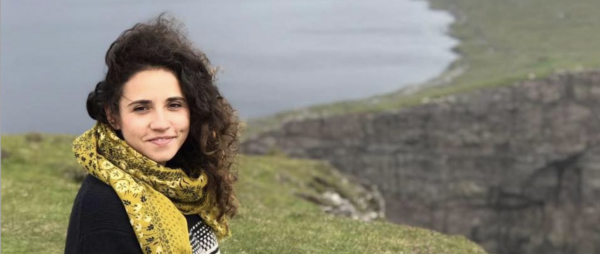

<html>
<head>
  <title> Adela Fedor </title>
  <meta name="viewport" content="width=device-width, initial-scale=1">
  <link href="main.css" type="text/css" rel = "stylesheet"/>
  <link href="lato_font.css" type="text/css" rel = "stylesheet"/>
  <link href="awesome_font.css" type="text/css" rel = "stylesheet"/>
  <style>
      body,h1,h2,h3,h4,h5,h6 {font-family: "Lato", sans-serif;}
      body, html {
          height: 100%;
          color: #777;
          line-height: 1.8;
      }
  /* Create a Parallax Effect */
  .bgimg-1, .bgimg-2, .bgimg-3 {
      background-attachment: fixed;
      background-position: center;
      background-repeat: no-repeat;
      background-size: cover;
  }
  
  /* First image (Logo. Full height) */
  .bgimg-1 {
      background-image: url('Me.jpg');
      min-height: 100%;
  }
  
  /* Second image (Portfolio)
  .bgimg-2 {
      background-image: url("/w3images/parallax2.jpg");
      min-height: 400px;
  }
  
  /* Third image (Contact)
  .bgimg-3 {
      background-image: url("/w3images/parallax3.jpg");
      min-height: 400px;
  }
  
  .w3-wide {letter-spacing: 10px;}
  .w3-hover-opacity {cursor: pointer;}
  
  /* Turn off parallax scrolling for tablets and phones */
  @media only screen and (max-device-width: 1024px) {
      .bgimg-1, .bgimg-2, .bgimg-3 {
          background-attachment: scroll;
      }
  }
  </style>
</head>


<body>
    
<!-- Header
    <header class="w3-display-container w3-content w3-center" style="max-width:1500px">
        
        <div class="w3-display-middle w3-padding-large w3-border w3-wide w3-text-light-grey w3-center">
            <h1 class="w3-hide-medium w3-hide-small w3-xxxlarge">Adela Fedor</h1>
            <h5 class="w3-hide-large" style="white-space:nowrap">Adela Fedor</h5>
            <h3 class="w3-hide-medium w3-hide-small">Adela Fedor</h3>
        </div>
    </header>
    
<!-- Navbar (@bottom of header image) -->

<!--
    <h2> Professional background</h2>
    <p> Adela is currently based out of San Francisco, CA. She has ~3 years of experience as a Program/Project Manager for the online design team of one of the world’s largest banks, managing design deliverables for a $300M program.</p>
    <p> Adela’s expertise in Program Management began prior to starting at Accenture. She directed Stanford University’s biggest international entrepreneurial conference, which was attended by ~100 leading student entrepreneurs and had a budget of $50K+ USD. </p>
    <p> Adela graduated with Honors from Stanford University. She received a Bachelor of Science degree in Computer Science with a focus on Biocomputation.</p>
    <p> She is interested in creating innovative customer centric solutions to user needs and would like to continue growing her product management skills. </p>
-->
<!-- Navbar (@ bottom of header image) -->
<!--
    <h2> Functional and technical expertise</h2>
    <ul>
        <li> Program and Project Management </li>
        <li> Product Management </li>
        <li> Agile Delivery Management </li>
        <li> Digital Customer Experience </li>
        <li> Design Thinking </li>
        <li> Effective Communications </li>
        <li> Detail oriented </li>
        <li> Create problem solving/ critical thinking </li>
        <li> Business Process Design </li>
        <li> Microsoft Word, Excel, PowerPoint, and Visio </li>
        <li> Atlassian Jira and Confluence </li>
        <li> Java, C, C++, Javascript, MATLAB </li>
        <li> Data analytics </li>
    </ul>
-->

</body>
</html>
